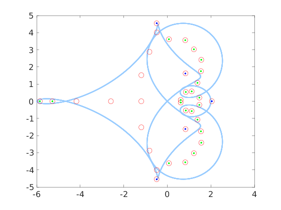
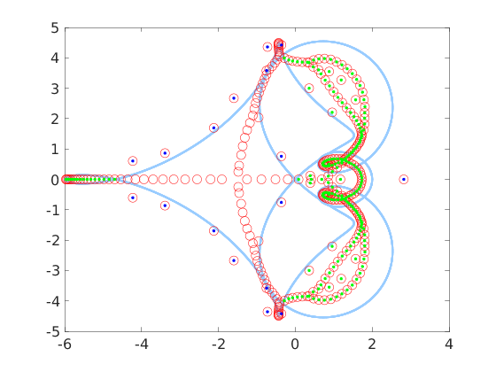
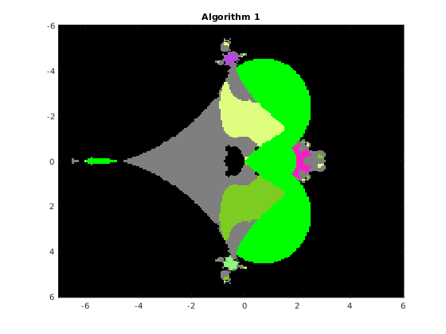
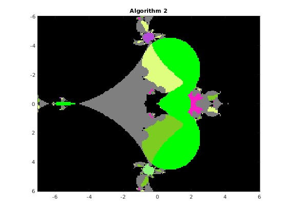
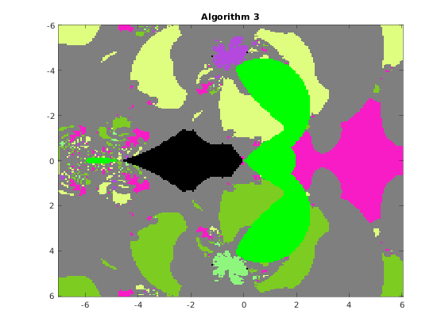
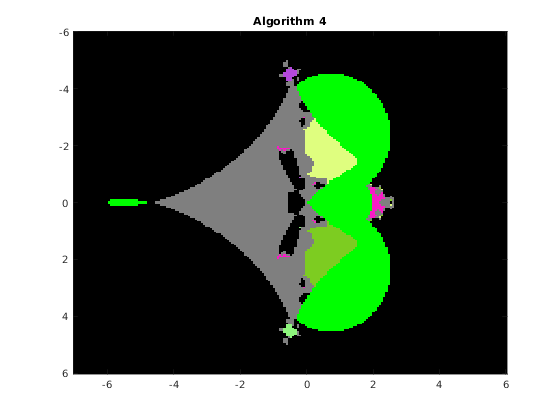

Computing eigenvalues of a QT matrix
The main functions for computing the eigenvalues of a QT matrix A are eig_single and eig_all. Other useful functions are basins, and distances.
Contents
The function eig_single
eig_single computes a single eigenvalue starting from an initial estimate. The syntax is
% [x, U, y, info] = eig_single(A, x0, varargin); % Input: % A = cqt(am,ap,E) % x0 : initial guess % Optional values: % 'algo', a, where a = 1,2,3,4, according to the algorithm used: % 1 Newton's iteration applied to det(WV)=0 (Vandermonde version) % 2 Newton's iteration applied to det(W[I;G;G^2;...)=0 (Frobenius version) % 3 Newton's iteration applied to det(HV-x V)=0 (Vandermonde version) % 4 Newton's iteration applied to det(H(G)-x I)=0 (Frobenius version) % default value: 1 % 'maxit', m, where m is the maximum number of iterations, default m=20 % 'epsilon', ep, where ep is the relative precision for the halt criterion, % default ep=1.e3*eps % 'verbose', ver, if ver=true, some information is printed at run time, % default ver=false % 'residual', res, if res=true, the residual error is computed, default res=false % 'eigenvector', k, where k is the number of block components of the eigenvector % default value k=0 % 'advpx', ad, if ad=true, the multiprecision toolbox advanpix is used, % default ad=false % 'digits', dig, where dig is the number of decimal digits precision used in % advanpix, default dig=34 % % Output: % x : eigenvalue % if 'eigenvector', 0, then % U : is either the pxp Vandermonde or G=F^p, where F is the Frobenius matrix % y : is the vector such that [VDy; VD^2y; VD^3y; ...] or [Gy; G^2y; G^3y;...], % is the corresponding eigenvector % if 'eigenvector', k, where k > 0, then % U : is the eigenvector and y is empty % info : this variable contains further information, more specifically, % info.flg : 0 No value in the connected component containing x0 is eigenvalue % (the number p of zeros of a(z)-x1 with modulus <1 is p=0) % 1 p=q, x is an isolated eigenvalue (q is the number of equations) % 2 p>q, all values in the connected component containing x0 are eigvals % 3 p<q, x is an isolated eigval % 4 p<q, x is not eigenvalue % 5 p<q, x is outside the connected component containing x0 % 6 diverging sequence % 7 exceeded the max number of iterations % info.res : residual error in the first q components of the equation Av-x1 v=0 % info.vres : vector with the residual errors per step % info.vresest : vector with the residual errors per step estimated by the SVD % info.it : number of iterations
Examples
Consider the following QT matrix
am = [0 1 -2 1]; ap = [0 1 1 0 -1 0 0 1]; E=zeros(3,10); E(:,8:10) = diag([8,-8,8]); A = cqt(am,ap,E);
Apply Newton iteration starting from the complex value x0=-0.5+4.3*i
x0 = -0.5+4.3*i; format long e [x,~,~,info] = eig_single(A, x0); x info.flg
x =
-4.837450062897876e-01 + 4.552036737687115e+00i
ans =
1
We may compute the first 100 block components of the corresponding eigenvector by adding the option 'eigenvector',100 The residual error at each step can be computed by adding the option 'res', true
[x, v, ~, info] = eig_single(A, x0, 'eigenvector', 100, 'res', true); residual = info.res
residual =
4.974954893905714e-15
then plot in log scale the moduli of the components of the eigenvector to check the exponential decay
semilogy(abs(v));
Plot the residual error at each step to check convergence
er = info.vres; semilogy(abs(er));
We may compare the residual errors of the Vandermonde and the Frobenius versions
[xv, vv, ~, info] = eig_single(A, x0, 'algo', 1, 'eigenvector', 100, 'res', true); res_vand = info.res [xf, vf, ~, info] = eig_single(A, x0, 'algo', 2, 'eigenvector', 100, 'res', true); res_frob = info.res
res_vand =
4.974954893905714e-15
res_frob =
5.197966865444977e-16
The high precision computation can be carried out relying on the Advanpix package In this case we have to add the path of the Advanpix folder
xhigh = eig_single(A, x0, 'algo', 2, 'advpx', true, 'digits',64); err_vand = abs((xv-xhigh)/xhigh) err_frob = abs((xf-xhigh)/xhigh)
err_vand =
1.285838835638299674001572539644647479028451697472758273763762834e-15
err_frob =
1.982570716628911977370921323010014143217328389231947113025661618e-16
In order to see the flow of the computation, one can activate the "verbose" mode as follows
x = eig_single(A, x0, 'verbose', true);
step = 1, q = 3, p= 3, x0=-5.000000e-01 +4.300000e+00i
rel_correction = 6.02959e-02, flag = 1
resalt = 1.06058e-02
step = 2, q = 3, p= 3, x0=-6.549420e-01 +4.510057e+00i
rel_correction = 5.32818e-02, flag = 1
resalt = 8.29359e-03
step = 3, q = 3, p= 3, x0=-4.670769e-01 +4.663909e+00i
rel_correction = 3.55759e-02, flag = 1
resalt = 3.59777e-03
step = 4, q = 3, p= 3, x0=-5.235872e-01 +4.507024e+00i
rel_correction = 1.34904e-02, flag = 1
resalt = 1.14193e-03
step = 5, q = 3, p= 3, x0=-4.974534e-01 +4.562375e+00i
rel_correction = 4.05144e-03, flag = 1
resalt = 9.88062e-05
step = 6, q = 3, p= 3, x0=-4.823172e-01 +4.551576e+00i
rel_correction = 3.25709e-04, flag = 1
resalt = 7.98328e-07
step = 7, q = 3, p= 3, x0=-4.837336e-01 +4.552041e+00i
rel_correction = 2.64787e-06, flag = 1
resalt = 5.18438e-11
step = 8, q = 3, p= 3, x0=-4.837450e-01 +4.552037e+00i
rel_correction = 1.71959e-10, flag = 1
resalt = 1.08054e-15
step = 9, q = 3, p= 3, x0=-4.837450e-01 +4.552037e+00i
rel_correction = 3.62825e-15, flag = 1
resalt = 9.28775e-16
return 4, flg=1: x is eigenvalue with p=q
The function eig_all
eig_all computes all the eigenvalues of A. The syntax is
% [x, xcont, res, it, ei] = eig_all(A, varargin); % In Input: % A : the QT-matrix A=cqt(am,ap,E); % Optional parameters % 'algo', a, where a = 1,2,3,4, according to the algorithm used: % 1 Newton's iteration applied to det(WV)=0 (Vandermonde version) % 2 Newton's iteration applied to det(W[I;G;G^2;...)=0 (Frobenius version) % 3 Newton's iteration applied to det(HV-x V)=0 (Vandermonde version) % 4 Newton's iteration applied to det(H(G)-x I)=0 (Frobenius version) % default value: 1 % 'maxit', m, where m is the maximum number of iterations, default m=20 % 'epsilon', ep, where ep is the relative precision for the halt criterion, % default ep=1.e3*eps % 'fact', f, the value f determines the size N=f*(max input size) of the matrix, default f=3 % A_N whose eigenvalues are the initial points of the iterations, default 3 % 'verbose', ver, if ver=true, some information is printed at run time, % default ver=false % 'plotfig', plf, if plf=true, some figures are plotted, default false % 'advpx', ad, if ad=true, the multiprecision toolbox advanpix is used, % default ad=false % 'digits', dig, where dig is the number of decimal digits precision used in % advanpix, default dig=34 % % In Output % x: vector with the isolated eigenvalues (p=q) % xcont: eigenvalues in a continuous set % res: vector with the residual errors of x % it: vector with the number of iterations % ei: vector with the eigenvalues of the finite section A_N
Examples
Compute all the eigenvalues of A
x = eig_all(A)
x =
Column 1
-4.837450062897892e-01 + 4.552036737687120e+00i
Column 2
-4.837450062897892e-01 - 4.552036737687120e+00i
Column 3
8.256318409116030e-01 + 1.618550197572258e+00i
Column 4
8.256318409116030e-01 - 1.618550197572258e+00i
Column 5
2.044401070062710e+00 - 2.276745757606108e-15i
The plot of all the eigenvalues is obtained as follows
x = eig_all(A, 'plotfig', true);
 The red circles represent the eigenvalues of the truncated NxN matrix A_N, the blue dots represent the isolated eigenvalues, the red circles containing a green dot indicate those eigenvalues of A_N belonging to components of C-a(T) formed by continuous set of eigenvalues. The light blue curve is the image of the unit circle through the symbol a(z)
Compute all the eigenvalues with 64-digit precision
x = eig_all(A, 'advpx', true, 'digits', 64)
x =
Columns 1 through 1
-0.4837450062897878931551738734026592210148039039766253255264661802 + 4.552036737687121021739665863777545084238060342967413944214153222i
Columns 2 through 2
-0.4837450062897878931551738734026592210148039039766253255264661802 - 4.552036737687121021739665863777545084238060342967413944214153222i
Columns 3 through 3
0.8256318409116022793646952400506428023240841992175627290626963342 + 1.618550197572258141669890157618701594665856546827627583684380354i
Columns 4 through 4
0.8256318409116022793646952400506428023240841992175627290626963342 - 1.618550197572258141669890157618701594665856546827627583684380354i
Columns 5 through 5
2.0444010700627397129102803262115737820299555026983393162488954 + 3.41521768658399098604769381795268245283778804850967958646741104e-63i
A more interesting situation is to consider a random correction like this
A1 = cqt(am,ap,5*(rand(3,100)-0.5));
x = eig_all(A1, 'plotfig', true);
 More information, say, the residual error and the number of iterations for each computed eigenvalue for the Vandermonde and the Frobenius versions, can be obtained in the following way
[xv,~,resv,itv,~] = eig_all(A1,'algo',1); [xf,~,resf,itf,~] = eig_all(A1,'algo',2); resv resf itv itf
resv =
Columns 1 through 3
4.032043652446081e-16 4.032043652446081e-16 8.560112432275140e-16
Columns 4 through 6
8.560112432275140e-16 2.301632017803088e-16 2.301632017803088e-16
Columns 7 through 9
3.893935019687203e-16 3.893935019687203e-16 2.657860042895397e-16
Columns 10 through 12
2.657860042895397e-16 1.341766842815025e-15 1.341766842815025e-15
Columns 13 through 15
4.266319059109168e-17 4.266319059109168e-17 9.884198494447511e-17
Columns 16 through 18
9.884198494447511e-17 1.604562885141140e-16 1.604562885141140e-16
Column 19
5.121254434306492e-17
resf =
Columns 1 through 3
1.285867527421112e-17 1.285867527421112e-17 1.463844882178004e-16
Columns 4 through 6
1.463844882178004e-16 9.607768402618110e-17 9.607768402618110e-17
Columns 7 through 9
8.684778680916420e-17 8.684778680916420e-17 2.141033652135890e-16
Columns 10 through 12
2.141033652135890e-16 1.032582278001415e-16 1.032582278001415e-16
Columns 13 through 15
2.249842584819132e-16 2.249842584819132e-16 1.959874305792388e-16
Columns 16 through 18
1.959874305792388e-16 9.765818716075084e-17 9.765818716075084e-17
Column 19
1.201297521838251e-17
itv =
Columns 1 through 13
3 3 3 3 3 3 4 4 3 3 4 4 3
Columns 14 through 19
3 8 8 3 3 3
itf =
Columns 1 through 13
3 3 3 3 3 3 4 4 3 3 4 4 3
Columns 14 through 19
3 7 7 3 3 3
The function basins
This function draws the picture with the basins of attraction of the Newton iteration in a rectangle of the complex plane. The syntax is
% [F, v, iter] = basins(A, n, x0, x1, y0, y1, varargin) % The function draws the basins of attraction of the % fixed point iteration given by algorithm algo, where algo=1,2,3,4, % applied to the QT matrix A in the range x0<re(x)<x1, y0<im(x)<y1 % % Optional parameters: % 'algo', a, where a = 1,2,3,4, according to the algorithm used: % 1 Newton's iteration applied to det(WV)=0 (Vandermonde version) % 2 Newton's iteration applied to det(W[I;G;G^2;...)=0 (Frobenius version) % 3 Newton's iteration applied to det(HV-x V)=0 (Vandermonde version) % 4 Newton's iteration applied to det(H(G)-x I)=0 (Frobenius version) % default value: 1 % 'maxit', m, where m is the maximum number of iterations, default m=20 % 'epsilon', ep, where ep is the relative precision for the halt criterion, % default ep=1.e-11 % 'verbose', ver, if ver=true, some information is printed at run time, % default ver=false % 'advpx', ad, if ad=true, the multiprecision toolbox advanpix is used, % default ad=false % 'digits', dig, where dig is the number of decimal digits precision used in % advanpix, default dig=34 % 'plotfig', if true, the figure is plotted, default true % On output: A is the nxn matrix of unint n: A(k,j) contains the integer s % such that the fixed point sequence obtained by starting from the point % z0 = x0+(k-1)(x1-x0)/(n-1) + i(y0+(j-1)(y1-y0)/(n-1)), k,j=1:n % converges to the (s+1)-st eigenvalue. Moreover, % A(k,j) = 256-1 if z0 is in a continuous set % 255-1 if the sequence exits the component containing z0 % 254-1 if the sequence diverges or if exceeded the max number of iterations % % v: vector with the isolated eigenvalues % iter: overall number of iterations % a picture of the basins is plotted with the following colors: % x eig: color associated with the eig (flag 1 or 3) % 255 continuous set: green (flag 2) % 254 out of the component: light gray (flag 5) % 253 p<q not an eig : black (flag 4) % 253 Exceeded iter: black (flag 6) % 253 Diverging seq. black (flag 7)
Example
Consider the original matrix A and compute the basins for algorithms 1,2,3,4 on a grid of 200x200 pixels. We fix the random number generator to ensure the images are consistent across multiple runs.
rng(1); n = 200; x0 = -7; x1 = 6; y0 = -6; y1 = 6; F1 = basins(A, n, x0, x1, y0, y1, 'algo', 1, 'verbose',false, 'plotfig', false); F2 = basins(A, n, x0, x1, y0, y1, 'algo', 2, 'verbose',false, 'plotfig', false); F3 = basins(A, n, x0, x1, y0, y1, 'algo', 3, 'verbose',false, 'plotfig', false); F4 = basins(A, n, x0, x1, y0, y1, 'algo', 4, 'verbose',false, 'plotfig', false); % choose the color palette MP = rand(256,3); MP(256,:) = [0 1 0]; % continuous set MP(255,:) = [0.5,0.5,0.5]; % out of the component MP(254,:) = [0 0 0]; % non-converging sequence figure; image([x0,x1],[y0,y1],F1); title(' Algorithm 1 '); colormap(MP); figure; image([x0,x1],[y0,y1],F2); title(' Algorithm 2 '); colormap(MP); figure; image([x0,x1],[y0,y1],F3); title(' Algorithm 3 '); colormap(MP); figure; image([x0,x1],[y0,y1],F4); title(' Algorithm 4 '); colormap(MP);   
The function distances
For each eigenvalue x of the QT matrix A, this function computes the distance of x from the closest eigenvalue of the truncated matrix A_N, for different values of N. The syntax is
% [Dist, x] = distances(A, algo, N0, nsamp, advpx, dig) % % This function computes all the eigenvalues of A by means of the algorithm algo % together with the distances of each eigenvalue from the closest eigenvalue of % the truncated matrix A_N for N = 2^k N0, k = 0,1,2,...,nsamp-1 % On Output % The first line of the matrix Dist contains the truncation values N0, % 2*N0,... % The remaining lines are such that Dist(i,j) is the distance of % eigenvalue i-1 of A from the closest value of A_N for N= N0*2^(j-1)
Example
D = distances(A, 1, 25, 5, false, 34); format short e; D
D = 2.5000e+01 5.0000e+01 1.0000e+02 2.0000e+02 4.0000e+02 7.5844e-01 1.6052e-02 1.7850e-04 3.2819e-07 3.3035e-14 2.7271e-01 7.7273e-03 1.9634e-04 8.8716e-08 4.3191e-14 3.8595e-02 1.1208e-03 4.9457e-07 5.8871e-15 0 2.6531e-02 9.7195e-04 1.7372e-07 3.3909e-15 0 1.9835e-02 8.5097e-04 1.3665e-07 2.4951e-13 0